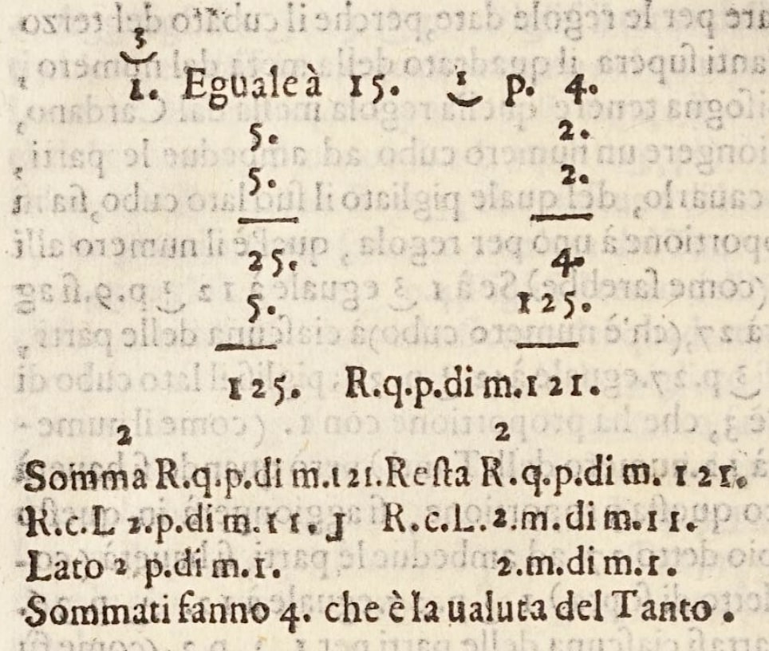

Lịch sử ngắn gọn
Diễn giải hình học của phương trình bậc hai và bậc ba
Xét phương trình bậc hai \begin{eqnarray}\label{quad001} x^2 = mx + n. \end{eqnarray} Từ trường tiểu học, chúng ta đã học cách tìm nghiệm của nó, tức là tất cả các giá trị của $x$ thỏa mãn phương trình (\ref{quad001}). Để làm điều này, chúng ta chỉ cần sử dụng công thức nghiệm bậc hai nổi tiếng
Nếu chúng ta vẽ phương trình (\ref{quad001}), chúng ta có thể quan sát một cách hình học rằng nó biểu diễn giao điểm của parabol $y=x^2$ với đường thẳng $y = mx+n.$ Điều này có thể được thấy trong ứng dụng sau. Kéo các thanh trượt bên dưới và quan sát điều gì xảy ra với các điểm giao $x_0$ và $x_1.$
Như bạn đã nhận ra, chúng ta có ba trường hợp:
- Có hai điểm giao nhau, tức là hai nghiệm.
- Chỉ có một điểm giao nhau, tức là một nghiệm.
- Không có điểm giao nào, tức là không có nghiệm.
Thật ngạc nhiên, điều này đã được biết đến từ thời cổ đại, ngay cả khi không có ký hiệu toán học hay máy tính. Chúng ta biết từ các bảng đất sét có niên đại khoảng 2000 trước Công nguyên rằng nền văn minh Babylon đã có công thức nghiệm bậc hai, cho phép họ (dưới dạng lời) giải các phương trình bậc hai. Vì khái niệm số âm phải đợi đến thế kỷ thứ mười sáu mới xuất hiện, người Babylon không xem xét các nghiệm âm [9, tr. 29-30]. Chúng ta cũng có thể tìm thấy các phương trình một cách ngầm định trong hình học được phát triển bởi người Hy Lạp cổ đại, như chúng ta mong đợi khi các đường tròn, parabol, và tương tự đang được nghiên cứu, nhưng chúng ta không đòi hỏi rằng mọi bài toán hình học đều có nghiệm [9, Ch. 4].
Bây giờ hãy quay lại phương trình bậc hai $x^2= mx+ n.$ Xét các giá trị $m=0$ và $n=-1.$ Nếu chúng ta sử dụng công thức (\ref{quad004}), chúng ta có được $$x = \pm\sqrt{-1}.$$ Chuyện gì đang xảy ra ở đây? Hầu hết các bạn đã học từ giải tích, hoặc trường tiểu học, rằng chúng ta không thể lấy căn bậc hai của số âm. Vậy thì, làm thế nào để chúng ta diễn giải giá trị này? Về mặt hình học, chúng ta có thể liên hệ nghiệm $x = \pm\sqrt{-1}$ với việc parabol $y = x^2$ và đường thẳng $y=-1$ không giao nhau, xem Hình 1. Nói cách khác, không có nghiệm. Nói chung, nếu $\dfrac{m^2}{4} + n \lt 0,$ thì phương trình $x^2= mx+ n$ không có nghiệm.

Có ý kiến cho rằng điều này đã dẫn đến việc phát minh ra một số mới được ký hiệu bằng $i,$ bằng $\sqrt{-1},$ và được đặt tên là "ảo". Nếu chúng ta sử dụng $i$ như một số sao cho $i^2 = -1,$ thì giá trị này là nghiệm của phương trình $x^2=-1.$
Cũng là một thông lệ phổ biến để chỉ ra trong các khóa học toán học rằng số phức, được ký hiệu là $a + b\sqrt{-1},$ cần thiết để giải một số phương trình bậc hai, chẳng hạn như $x^2+1=0.$ Tuy nhiên, số phức xuất hiện, trên thực tế, từ nhu cầu giải phương trình bậc ba. Hơn nữa, khi phương trình bậc hai và bậc ba lần đầu xuất hiện, vào thời điểm đó, không cần thiết phải có nghiệm cho tất cả các phương trình.
Vậy số phức thực sự trở nên quan trọng ở đâu? Để trả lời điều này, hãy xét phương trình bậc ba \begin{eqnarray}\label{cubic001} x^3 = p x + q. \end{eqnarray} Về mặt hình học, phương trình này biểu diễn giao điểm của hàm bậc ba $y = x^3$ với đường thẳng $y = px + q,$ như được hiển thị trong ứng dụng sau. Kéo các thanh trượt bên dưới và quan sát điều gì xảy ra.
Như bạn có thể quan sát, bất kể đường thẳng nào được xác định bởi các tham số $p$ và $q,$ nó sẽ luôn giao với hàm bậc ba ở đâu đó, ngay cả khi đường thẳng $px+q$ vuông góc với trục $x$ và xa gốc tọa độ (tức là khi $p$ và $q$ đều là những số dương/âm rất lớn). Điều này là do hàm bậc ba đi từ $-\infty$ đến $+\infty.$ Do đó, không có đường thẳng nào bạn có thể vẽ mà sẽ không giao với hàm bậc ba này. Ví dụ này rất khác với trường hợp bậc hai là parabol $x^2$ và bạn có thể xác định một đường thẳng $mx + n$ sao cho nó sẽ không giao với parabol.
Nghiệm của phương trình bậc ba
Ai cũng biết rằng nghiệm của phương trình bậc ba $x^3 = px + q$ được phát triển trong thời kỳ Phục Hưng (thế kỷ 15 và 16) bởi các nhà toán học Ý. Scipione del Ferro (1465-1526) và Niccolò Tartaglia (1500-1557), tiếp theo là Girolamo Cardano (1501-1576), đã chỉ ra rằng $x^3 = px + q$ có nghiệm được cho bởi


Để xem cách thức hoạt động, hãy xét phương trình $x^3 = -6 x+ 20.$ Trong trường hợp này $p=-6$ và $q=20.$ Nếu chúng ta thay các số này vào (\ref{cubic002}), chúng ta có được nghiệm
Bài tập: Hãy thử giải $x^3=6x+6$ bằng công thức Cardano.
Sự ra đời của số ảo
Vài năm sau khi phát hiện ra công thức Cardano, kỹ sư-kiến trúc sư Ý Rafael Bombelli (1526-1572) nhận ra rằng có điều gì đó kỳ lạ và nghịch lý về công thức này. Ông xét phương trình \begin{eqnarray}\label{cubic003} x^3= 15 x+ 4 \end{eqnarray} và, có lẽ chỉ với một chút suy nghĩ, bạn có thể thấy rằng $x = 4$ là một nghiệm. Điều này cũng có thể được thấy trong Hình 4. Thực tế có ba nghiệm, nhưng Bombelli không xem xét các giá trị âm, vì vậy chúng ta cũng sẽ không xét.

Sau đó Bombelli sử dụng công thức Cardano để giải $x^3= 15 x+ 4.$ Do đó, xét $p = 15$ và $q=4,$ ông có được
Tuy nhiên, Bombelli đã vượt qua khó khăn này bằng cách thấy rằng biểu thức kỳ lạ (\ref{cubic004}) mà công thức Cardano đưa ra cho $x$ thực sự là thực, nhưng được biểu diễn theo một cách rất không quen thuộc. Cái nhìn sâu sắc này không đến dễ dàng. Như Bombelli đã viết trong cuốn sách L'Algebra của mình:
Và mặc dù với nhiều người điều này sẽ có vẻ là một điều kỳ quặc, bởi vì ngay cả tôi cũng từng có ý kiến này một thời gian trước, vì nó có vẻ đối với tôi là ngụy biện hơn là sự thật, tuy nhiên tôi đã tìm kiếm chăm chỉ và tìm thấy chứng minh, sẽ được ghi chú bên dưới. ... Nhưng hãy để người đọc áp dụng tất cả sức mạnh trí tuệ của mình, vì [nếu không] ngay cả ông ta cũng sẽ thấy mình bị lừa. [1, tr. 293-294; 10]

Cái nhìn sâu sắc tuyệt vời của Bombelli đơn giản là xử lý $\sqrt{-1}$ như một số và thao tác với nó theo một số quy tắc số học cụ thể (cùng loại quy tắc mà chúng ta sử dụng ngày nay). Do đó ông phát hiện ra rằng

\begin{eqnarray*} x^3 &=& 15x + 4\\ [x^3 &=& px + p] \end{eqnarray*} \begin{eqnarray*} (4/2)^2-(15/3)^3 &=& -121\\ [\left(q/2\right)^2 -\left(p/2\right)^3]&=&-121 \end{eqnarray*} \begin{eqnarray*} x &=& \sqrt[3]{2+ \sqrt{-121}} + \sqrt[3]{2- \sqrt{-121}}\\ x &=& \sqrt[3]{2+ 11\sqrt{-1}} + \sqrt[3]{2- 11\sqrt{-1}} \\ x &=& 2 + \sqrt{-1} + 2 - \sqrt{-1} = 4 \end{eqnarray*}
Tất nhiên, như bạn có thể thấy trong Hình 6, Bombelli không có ký hiệu đại số mạnh mẽ như ngày nay (cũng không có máy tính) và các tính toán của ông bị giới hạn trong "miền thực". Thực tế, hầu hết các nhà toán học Ý vào thời điểm đó có xu hướng nghĩ về hình lập phương hoặc hình vuông như các đối tượng hình học hơn là các đại lượng đại số. Tuy nhiên, ông được ghi nhận vì đã chứng minh tính thực của nghiệm của phương trình bậc ba $x^3=15x+4,$ vì ông đã chứng minh sự thật phi thường rằng số thực có thể được sinh ra bởi số ảo.
Công thức Cardano buộc các nhà toán học phải đối mặt với căn bậc hai của số âm. Sự kiện lịch sử này là một ví dụ khác phủ định quan điểm phổ biến rằng toán học được "tạo ra" bởi các nhà toán học. Như thường xảy ra, chính toán học nói với chúng ta. Từ thời điểm này trở đi, số ảo mất đi phần nào tính chất thần bí của chúng, mặc dù việc chấp nhận đầy đủ chúng như những số bona fide chỉ đến vào những năm 1800.
Bài tập: Hãy xác minh rằng $\sqrt[3]{2 \pm \sqrt{-121}} = 2 \pm \sqrt{-1}.$
Sự trưởng thành của số phức
Nhiều nhà toán học sau Cardano và Bombelli đã có những đóng góp quan trọng cho số ảo (hoặc số phức). Ví dụ René Descartes (1596-1650) đã đặt ra thuật ngữ "ảo" trong cuốn sách La Géométrie năm 1637 như sau:
Không phải nghiệm đúng hay sai [âm] luôn luôn thực; mà đôi khi chỉ là ảo. [4, tr. 380]
John Wallis (1616-1703) đã chỉ ra cách biểu diễn hình học nghiệm phức của một phương trình bậc hai với hệ số thực [8, tr. 594]. Caspar Wessel (1745-1818) và Jean-Robert Argan (1768-1822) đã cung cấp biểu diễn hình học của số phức như vector [7, tr. 185-190].

Leonard Euler (1707-1783) đã chuẩn hóa ký hiệu "$i=\sqrt{-1}$" [6, tr. 184] và sử dụng số ảo để giải các phương trình bậc hai và bậc ba, mặc dù thực tế là ông vẫn nghi ngờ những số này. Trong cuốn Algebra của mình, ví dụ, ông đã đề cập:
[...] vì tất cả các số mà có thể hình dung đều lớn hơn hoặc nhỏ hơn 0, hoặc là 0, rõ ràng là chúng ta không thể xếp căn bậc hai của một số âm vào số các số có thể, và do đó chúng ta phải nói rằng đó là một đại lượng không thể. Theo cách này chúng ta được dẫn đến ý tưởng về những số, mà theo bản chất chúng là không thể; và do đó chúng thường được gọi là các đại lượng ảo, vì chúng chỉ tồn tại trong trí tưởng tượng. [5, tr. 43]
Để không ai coi điều này như một sự lên án, ông tiếp tục:
mặc dù vậy, những số này hiện diện với tâm trí; chúng tồn tại trong trí tưởng tượng của chúng ta, và chúng ta vẫn có một ý tưởng đầy đủ về chúng; [...] không có gì ngăn cản chúng ta sử dụng những số ảo này, và sử dụng chúng trong tính toán. [5, tr. 43]
Sau đó Carl Friedrich Gauss (1777-1855) giới thiệu thuật ngữ "số phức" chỉ các số có dạng $a+ b \, i $ [7, tr. 191]. Ông cũng đưa ra bốn chứng minh cho định lý cơ bản của đại số trong suốt sự nghiệp dài của mình. Định lý này nói với chúng ta rằng bất kỳ đa thức bậc $n$ nào cũng có $n$ nghiệm, một số hoặc tất cả có thể là ảo. Chứng minh đầu tiên mà Gauss đưa ra là trong luận án tiến sĩ năm 1799. Chứng minh cuối cùng (và có lẽ là thanh lịch nhất) cho phép sử dụng số phức không chỉ cho biến mà cả cho các hệ số. Vì điều này nhất thiết phụ thuộc vào việc công nhận số phức, Gauss đã giúp củng cố vị trí của những số này [8, Vol. 2, tr. 595].
Định nghĩa chặt chẽ đầu tiên về số phức được đưa ra bởi William Rowan Hamilton (1805-1865). Năm 1833 ông đề xuất với Viện Hàn lâm Ireland rằng một số phức $a+ ib$ có thể được xem như một cặp $(a, b),$ với $a,b$ là các số thực [7, tr. 192-193]. Sau đó ông định nghĩa phép cộng và phép nhân của cặp như sau:
Đây thực chất là một định nghĩa đại số của số phức. Từ quan điểm sư phạm và khám phá, tốt hơn là có số phức được giới thiệu thông qua diễn giải hình học. Nhưng từ quan điểm logic, lý thuyết cặp thỏa mãn hơn nhiều, vì nó cho thấy tính nhất quán của lý thuyết số phức xuất phát từ tính nhất quán của số thực [3, tr. 175].


Trong số nhiều nhà toán học và nhà khoa học đã đóng góp, có ba người nổi bật là đã ảnh hưởng quyết định đến quá trình phát triển của giải tích phức [8, Vol.2, Ch. 27]. Người đầu tiên là Augustin-Louis Cauchy (1789-1857), đã phát triển lý thuyết tích phân phức. Bằng cách sử dụng số ảo, Cauchy đã có thể tính "tích phân thực" mà trước đây không thể tính được, thu được những kết quả đáng kinh ngạc như


Cuối cùng, hai nhà toán học quan trọng khác là Karl Weierstrass (1815-1897) và Bernhard Riemann (1826-1866), xuất hiện trên sân khấu toán học vào khoảng giữa thế kỷ thứ mười chín. Weierstrass phát triển lý thuyết từ điểm xuất phát của chuỗi lũy thừa hội tụ, và cách tiếp cận này dẫn đến các phát triển đại số hình thức hơn. Riemann đóng góp một quan điểm hình học hơn trong nghiên cứu về hàm phức. Ý tưởng của ông có tác động to lớn không chỉ đối với giải tích phức mà đối với toán học nói chung, mặc dù quan điểm của ông chỉ được chấp nhận từ từ.
Nhận xét cuối
Những mô tả trước đây về số phức không phải là hết câu chuyện. Các phát triển khác nhau trong thế kỷ thứ mười chín và hai mươi đã cho phép chúng ta có cái nhìn sâu sắc hơn về vai trò của số phức không chỉ trong toán học, mà còn trong kỹ thuật và vật lý. Lịch sử của số phức rất hấp dẫn và tôi khuyến khích mạnh mẽ người đọc tham khảo các nguồn chính được trích dẫn ở đây có thể phục vụ như điểm khởi đầu để đi sâu vào các chi tiết lịch sử đã cho phép sự xuất hiện và phát triển của số phức.
Tài liệu tham khảo
- Bombelli, R. (1579). L'Algebra. Bologna.
- Cardano, H. (1545). Artis magnae, sive de regulis algebraicis, liber unus. (n.p.): Joh. Petreius.
- Carrucio, E. (2009). Mathematics and Logic in History and Contemporary Thought. (I. Quigly, Trans.) USA: Aldine Transaction. (Original work published 1964).
- Descartes, R. (1637). La Géométrie. Paris: A. Herman, Librairie Scientifique.
- Euler, L. (1972). Elements of Algebra. (Rev. John Hewlett, B.D. F.A.S. &c, Trans.). Springer-Verlag. (Original work published 1770).
- Euleri, L. (1845). Instituitionum Calculi Integralis. Volumen Quartum. Petropoli. Impensis Academia Imperialis Scientarum.
- González-Velasco, A. E. (2011) Journey through Mathematics. Springer Science+Business Media.
- Kline, M. (1972). Mathematical Thought from Ancient to Modern Times. Vols. 1-3. New York: Oxford University Press.
- Merzbach, U. C & Boyer, C. B. (2011). A history of mathematics. 3rd ed. John Wiley & Sons, Inc., Hoboken, New Jersey.
- O'Connor, J. J. & Robertson, E. F. (2000). Rafael Bombelli.
Đọc thêm
- Bagni, G. T. (2009). Bombelli's Algebra (1572) and a New Mathematical Object. For the Learning of Mathematics. Vol. 29, No. 2, pp. 29-31.
- Buehler, D. (2014). Incomplete understanding of complex numbers Girolamo Cardano: a case study in the acquisition of mathematical concepts. Synthese 191:4231-4252.
- Burton, D. M. (1995). The history of mathematics: An introduction (6th ed.) (2005). New York: McGraw-Hill.
- Gindikin, S. (2007). Tales of Mathematicians and Physicists. Second English edition Springer Science+ Business Media, LLC.
- Nahim, P. J. (1998). An imaginary tale: The story of $\sqrt{-1}$. USA: Princeton University Press.
- Huffman, C. J. (2019). Mathematical Treasure: Raphael Bombelli's L'algebra. Convergence.
- Marsden, J. E. & Tromba, A. J. (2003). Vector Calculus. USA: W. H. Freeman and Company.
- Merino, O. (2006). A Short History of Complex Numbers.
- Stillwell, J. (2010). Mathematics and Its History. Springer Science.